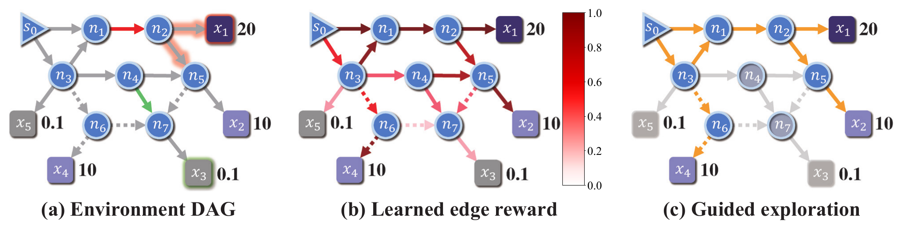
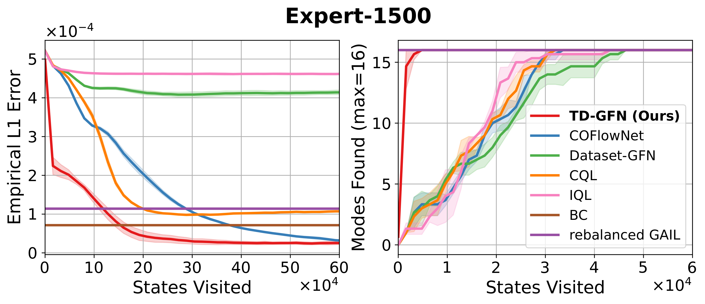
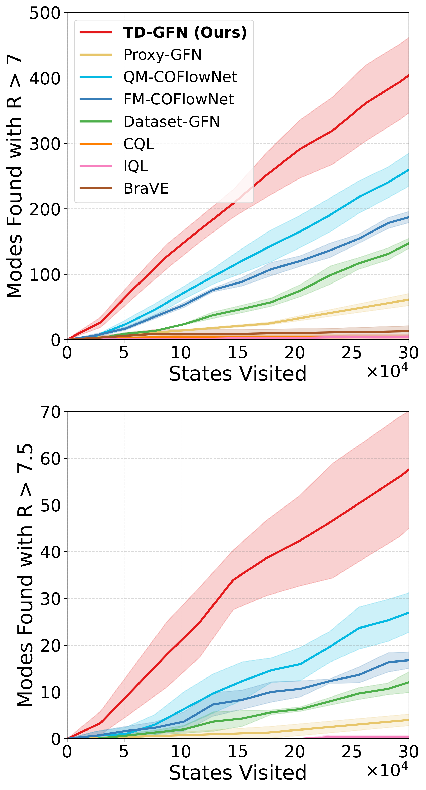
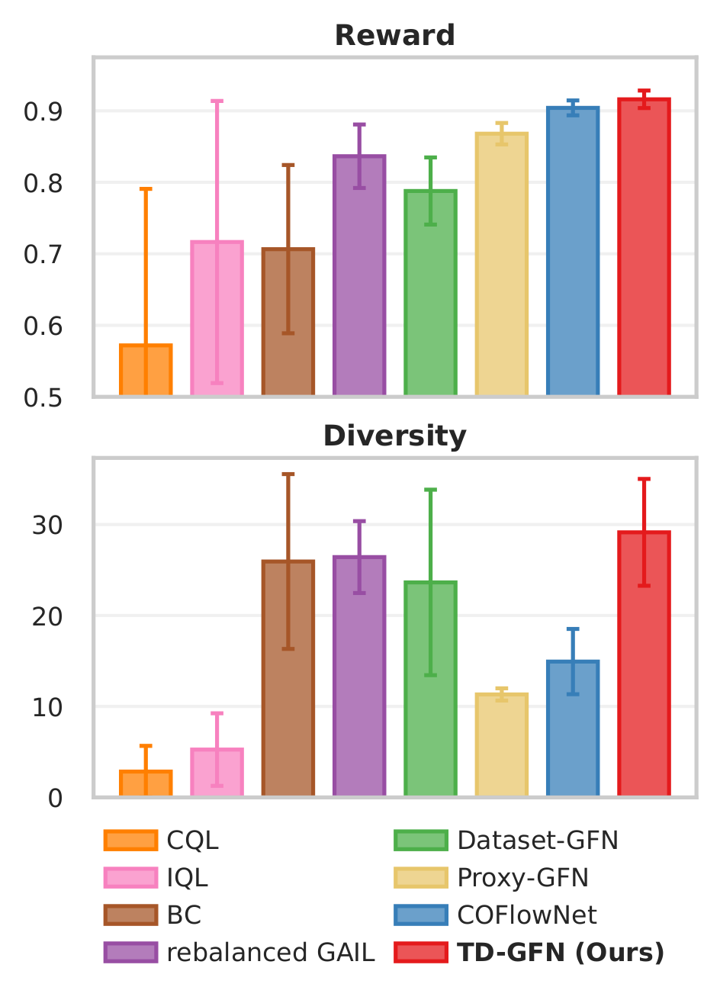

for Offline GFlowNet Training

GFlowNets sample diverse high-reward objects, but in many domains active reward queries are infeasible (wet labs, human eval). Standard offline pipelines depend on a learned reward proxy:
- Reliable proxy needs large, diverse data — rarely available.
- OOD queries leak fitting error into the policy gradient.
- Existing proxy-free methods impose coarse constraints.
DAG transitions contribute unequally to policy learning. Removing one edge can block a reward-20 mode; another only loses a 0.1 leaf.

Implication. Quantify edge importance offline → steer exploration without a proxy — foundation of TD-GFN.
Exploit the GFlowNet–entropy-RL equivalence: train discriminator $D_\phi$ on a rebalanced dataset $\widetilde{\mathcal{D}}$ ($P(\tau)\!\propto\!R(s_T)$) via max-causal-entropy IRL:
Rebalancing biases sampling toward high-reward terminals, yielding a pseudo-expert set whose backward policy is still $\mathcal{P}_B^*$ (Prop. 1).
Edge rewards never enter the gradient. Two indirect mechanisms shape training:
Policy is optimised on $G'$ using only ground-truth terminal rewards — no error propagation, while backward sampling concentrates effort on high-utility paths.
1,500 expert traj. · FM objective · vs. COFlowNet, CQL, IQL, BC, rebal. GAIL, Dataset-GFN.

($<5\!\times\!10^3$ visits)
convergence
baselines
TD-GFN matches the target distribution and recovers modes first under every stress test:
- Mixed — 50% noise from random policy.
- Few — only $1/10$ trajectories (150).
- Median — half-trained behavior policy.
- Bad — inverted-reward behavior policy, $IR\!=\!R^{-0.1}$ (worst-case demos).
5,000 samples per policy · means over 3 seeds (std in paper) · 1,500-traj. offline set · Conv. $=$ trajectories to convergence.
| Method | R-10 ↑ | R-100 ↑ | Conv. ↓ ($\times 10^4$) |
|---|---|---|---|
| Oracle-GFN (ref.) | 7.718 | 7.408 | 44.14 |
| Proxy-GFN | 7.625 | 7.281 | 43.74 |
| FM-COFlowNet | 7.582 | 7.201 | 5.83 |
| QM-COFlowNet | 7.611 | 7.296 | 4.42 |
| TD-GFN (Ours) | 7.733 | 7.450 | 2.75 |
Top reward among offline baselines; among GFN-style methods uses the fewest trajectories — matching Oracle-GFN at 1/16 the cost.


Pruning does not hurt diversity — TD-GFN beats every offline baseline on both tasks.